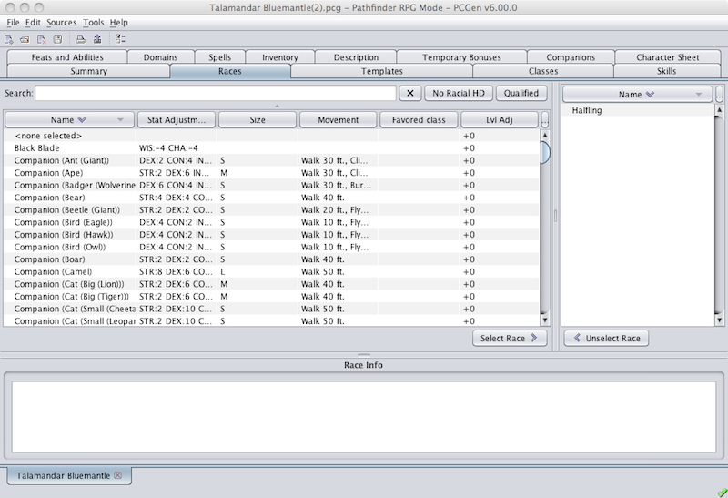

The Races tab is where you select your race.

The left pane displays the full list of races available from the loaded data sets. Besides PC races, this list also includes all monster races. Clicking on the No Racial HD button will remove all races that have inherent hit dice. Clicking on the Qualified button will remove all races that have requirements that the current character does not meet. An example of this would be a race with an alignment requirement. Finally, you can use the Search field to find the race you are looking for.
The right pane is where the character's race appears once its been selected. If the race was selected from the Summary tab the race selected will already be listed here. In that case, if you continue and select another race, as each character can only have one race, the previous race will be replaced with the new one.
The lower pane is the Race Info pane. When you select a race in the left or right pane this pane will display the basic information for the selected race.
Selecting a race is a simple process. Find and click on the desired race in the left pane and then click on the Select Race > button. The race appears in the right pane and you are done.
If you wish to change the selected race you will select the race lisrted in the right pane and then click on the < Unselect Race button. The race will be removed from the right pane. Now you can proceed to select a new race.